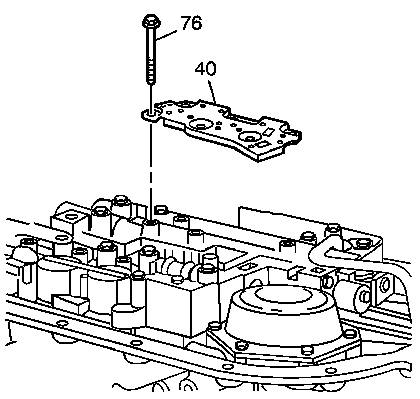
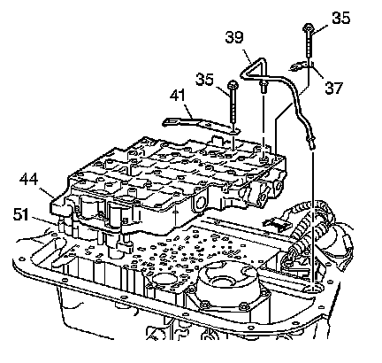
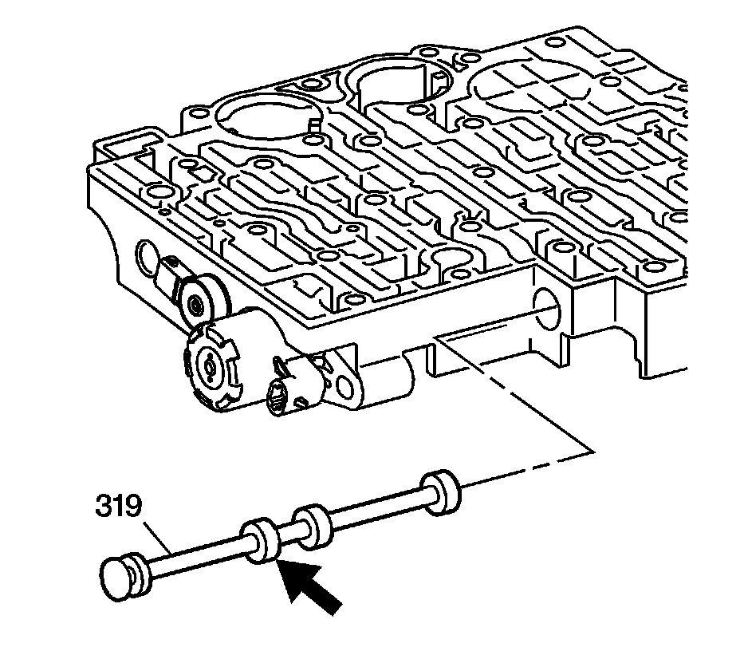
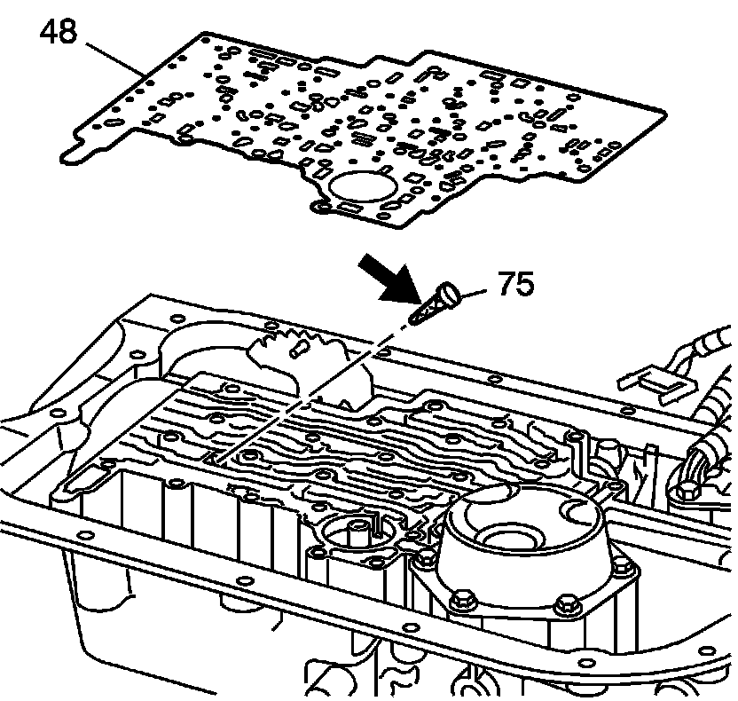
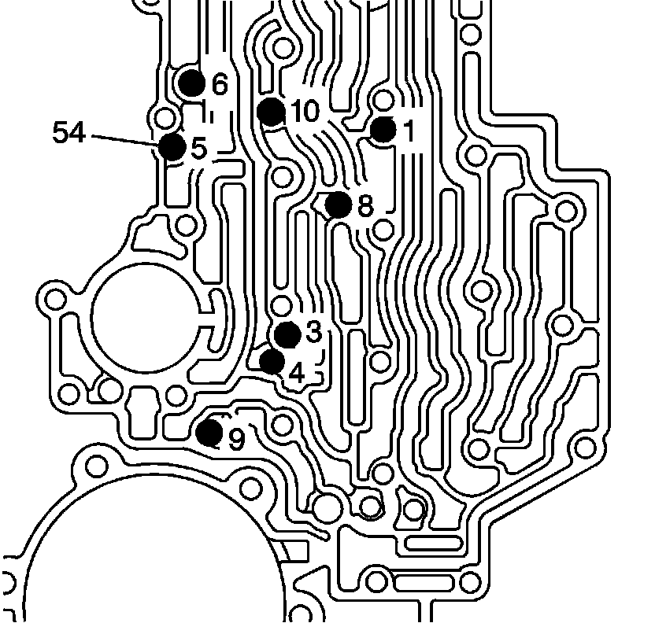

Control Valve Body Assembly Removal
Control Valve Body Assembly Removal

1. Remove the transmission fluid pressure manual valve position switch (TFP manual valve position switch) bolts (76) and the TFP manual valve position switch (40).

2. Remove the control valve body assembly bolts (35).
3. Remove the manual shift shaft detent spring assembly (41).
4. Remove the control valve body assembly bolt (35) and the lube oil pipe retainer (37).
5. Remove the lube oil pipe (39).
6. Remove the control valve assembly (44) including the following:
^ The 3rd and 4th clutch accumulator housing (51)
^ The control valve body gasket (45) (not shown)
^ The control valve body spacer plate (46) (not shown)
^ The accumulator housing gasket (47) (not shown)

7. Remove the manual valve (319) from the control valve assembly to prevent damage.
8. Inspect the manual valve (319) for nicks and burrs.

9. Remove the control valve body spacer plate gasket (48) from the case. The gasket may stick to the spacer plate.
Important: The TCC solenoid valve screen assembly can be removed easily by applying light pressure at the bottom of the screen.
10. Remove the TCC solenoid valve screen assembly (75) from the case passages.
11. Inspect the TCC solenoid valve screen assembly (75) for debris and damage.

Notice: Do not use a magnet in order to remove the control valve body ball check valves. This may magnetize the control valve body ball check valves, causing metal particles to stick to them.
12. Remove the 8 control valve body ball check valves (54).